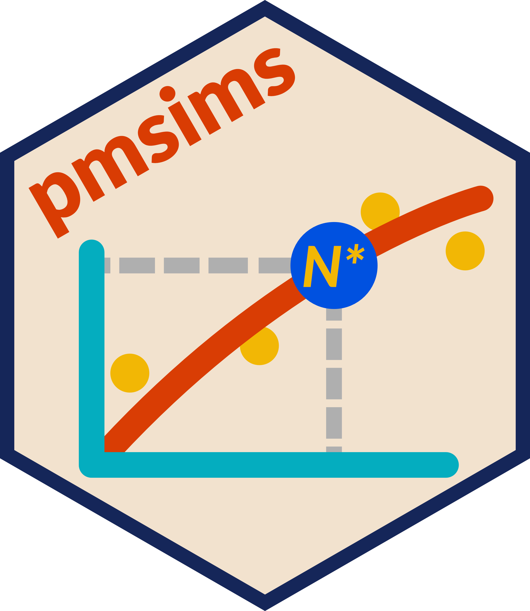

pmsims is an R package for estimating how much data are needed to develop reliable and generalisable prediction models. It uses a simulation-based learning curve approach to quantify how model performance improves with increasing sample size, supporting principled study planning and feasibility assessment.
The package is fully model-agnostic: users can define how data are generated, how models are fitted, and how predictive performance is measured. It currently supports regression-based prediction models with continuous, binary, and time-to-event outcomes.
Developed at King’s College London (Department of Biostatistics & Health Informatics) with input from researchers, clinicians, and patient partners. See also the pmsims project site.
Installation
Install the development version from GitHub:
# install.packages("remotes")
remotes::install_github("pmsims-package/pmsims")